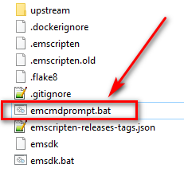
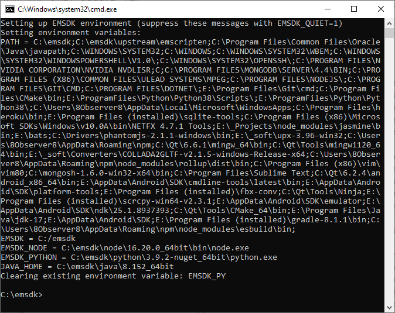
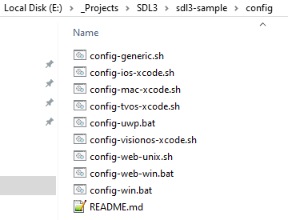
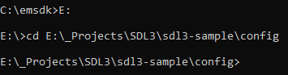
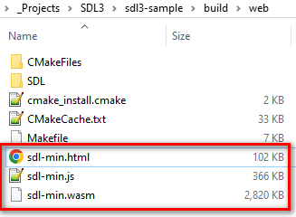
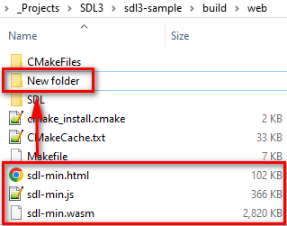
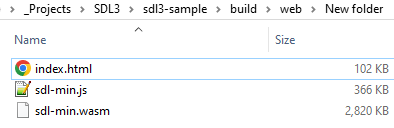

How to run SDL3 app on Web with WebAssembly
I will show how to run the sdl3-sample example on Web with WebAssembly. You should have MinGW installed. Try to check if MinGW is in the Path. So type in CMD: mingw32-make -v
1. Download and install emsdk
- Run CMD on C drive
- Copy and execute the following command to download emsdk on your C drive: git clone https://github.com/emscripten-core/emsdk.git
- Go to the downloaded folder using CMD: cd emsdk
- Install the specific version of emsdk: emsdk install 3.1.37
- Activate a new version: emsdk activate 3.1.37
2. Download and run SDL3 example
- Run CMD in a project folder where you want to download the example
- Copy and execute the following command to download the example: git clone https://github.com/Ravbug/sdl3-sample --depth=1 --recurse-submodules
- The source code of the example is here: 'sdl3-sample\src\main.cpp' It just shows a background color
- Open 'C:\emsdk' and run 'emcmdprompt.bat' by double click:

- You will see this prompt:

- Go to the 'sdl3-sample\config' folder:

- using this prompt, for example:

- Type the following command in the prompt: config-web-win
- Wait for a few minutes. It takes 12 minutes on my laptop. You should make it only once
- Open CMD in the 'sdl3-sample\build\web' and type this command: mingw32-make
- Wait for a few minutes. It takes 3 minutes on my laptop. You should make it every time when you change a source code in the 'sdl3-sample\src\main.cpp' fle. But it will take a few seconds
- Three files will be generated that you can distributed: 'sdl-min.html', 'sdl-min.js', and 'sdl-min.wasm':

- Create a new folder inside of 'sdl3-sample\build\web' and copy the generated files to this filder:

- Rename 'sdl-min.html' to 'index.html':

3. Distribute your builds on the free 'www.netlify.com' hosting